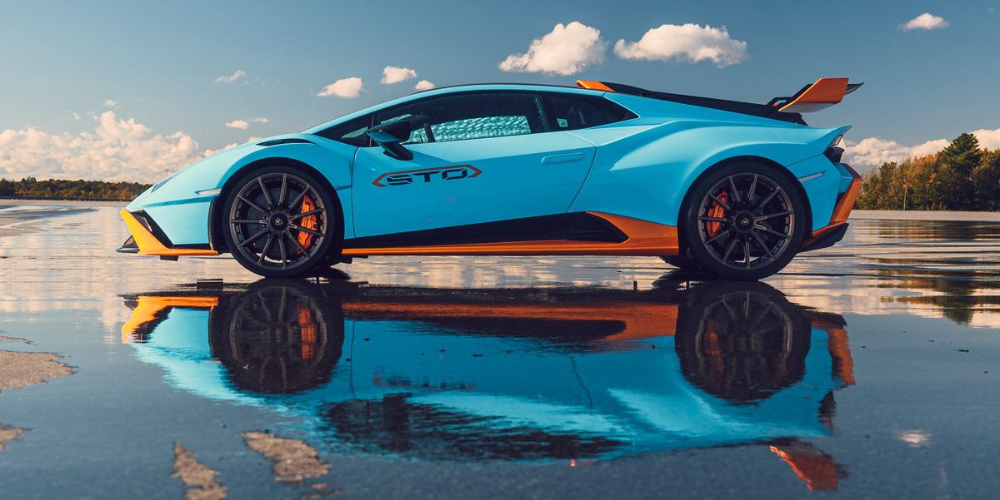

La Lamborghini Huracán est une voiture de sport haute performance produite par le constructeur automobile italien Lamborghini.


Design : La Huracán est connue pour son design élégant et agressif. Elle présente des lignes nettes, un style aérodynamique et les portes ciseaux emblématiques de Lamborghini, ce qui la rend instantanément reconnaissable comme une Lamborghini.
Moteur : La Huracán est propulsée par un moteur V10 de 5,2 litres monté au milieu. Selon le modèle et la variante, il peut produire entre 570 et 640 chevaux. Le moteur est couplé à une transmission automatique à double embrayage à 7 rapports.
Performance : La Lamborghini Huracán offre des performances exceptionnelles, avec une accélération de 0 à 60 mph en 3 secondes environ et une vitesse de pointe pouvant dépasser 200 mph. Il est doté d'une transmission intégrale pour une traction et une maniabilité améliorées.
Variantes: La Huracán a plusieurs variantes, dont la Huracán standard, la Huracán Spyder (cabriolet), la Huracán Performante et la Huracán Evo, entre autres. Ces variantes offrent différents niveaux de puissance, des améliorations de manipulation et des fonctionnalités uniques.
Intérieur : L'intérieur de la Huracán allie luxe et technologie de pointe. Il présente des matériaux haut de gamme, notamment du cuir et de l'Alcantara, et offre un cockpit axé sur le conducteur avec une gamme de fonctionnalités modernes.
Héritage : La Lamborghini Huracán a joué un rôle important dans le succès de Lamborghini. Il est loué pour sa combinaison de capacités de haute performance et de maniabilité au quotidien, ce qui en fait une option plus pratique pour les amateurs de supercars.
Succès commercial : La Huracán a été un succès commercial pour Lamborghini, avec des milliers d'unités vendues dans le monde. Son prix relativement accessible par rapport aux autres modèles Lamborghini
a contribué à sa popularité.
Successeur : Depuis ma dernière mise à jour des connaissances en septembre 2021, la Lamborghini Huracán n'avait pas de successeur officiel. Cependant, Lamborghini suit généralement un cycle de modèle générationnel, il est donc possible qu'un successeur ait été introduit ou soit en développement. La Lamborghini Huracán est célèbre pour sa combinaison de performances, de style et de maniabilité. Elle a consolidé sa place comme l'un des modèles Lamborghini les plus
populaires et les plus accessibles tout en conservant la réputation de la marque en matière de supercars hautes performances.